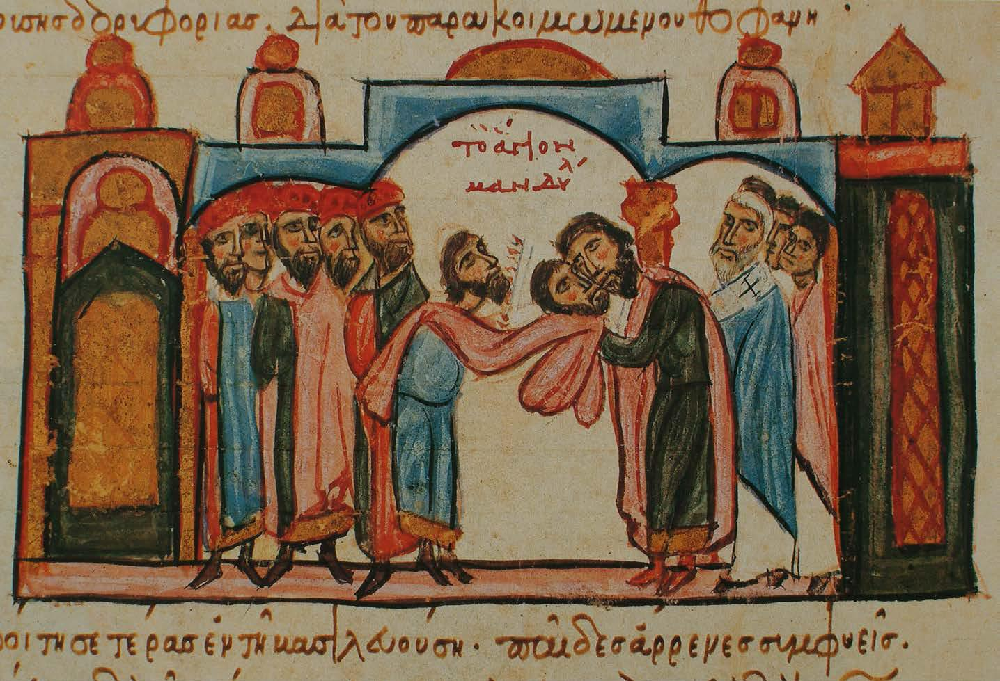

El recorrido de la Sindone comenzaria en Jerusalen, entre los años 30-33 d.C., siguiendo a la muerte de
Cristo
bajo el yugo romano de Poncio Pilato. El Evangelio segun San Juan nos relata lo siguiente:
El primer día de la semana, de madrugada, cuando todavía estaba oscuro, María Magdalena fue al sepulcro
y vio
que la piedra había sido sacada.
Corrió al encuentro de Simón Pedro y del otro discípulo al que Jesús amaba, y les dijo: «Se han llevado
del
sepulcro al Señor y no sabemos dónde lo han puesto».
Pedro y el otro discípulo salieron y fueron al sepulcro.
Corrían los dos juntos, pero el otro discípulo corrió más rápidamente que Pedro y llegó antes.
Asomándose al sepulcro, vio las vendas en el suelo, aunque no entró.
Después llegó Simón Pedro, que lo seguía, y entró en el sepulcro; vio las vendas en el suelo, y también
el
sudario que había cubierto su cabeza; este no estaba con las vendas, sino enrollado en un lugar aparte.
Luego entró el otro discípulo, que había llegado antes al sepulcro: él también vio y creyó.
Juan 20:1,8
En algunas traducciones traducen vendas para la palabra griega "ta othonia keimena", pero en realidad su
significado es "lienzos allanados". "Kairiai" es la expresion correcta para vendas como Juan cito
para la narracion de la resurrecion de Lazaro
Cuenta la leyenda que el rey de Edesa (actual Sanliurfa al sur de Turquia) Abgar V habia solicitado la
ayuda de
Jesus de Nazaret para curarle de la lepra que padecia. Supuestamente Jesus le respondio de vuelta a
Abgar
diciendole que una vez
que su mision se cumpliera enviaria a uno de sus discipulos a atenderle. Despues de la muerte de Jesus
uno de
sus discipulos fue a Edesa para cumplir la peticion del rey, llevo consigo un lienzo con el rostro de
Jesus y se
lo presento al
rey Abgar, curandole de su lepra. Se ha identificado a ese discipulo como Judas Tadeo, por lo que seria
la base
de representarlo con un medallon con la imagen de Jesus.
A ese lienzo se le conocia por el nombre de "Mandylion" o "Tetradiplon" (doblado 4 veces) segun el
historiador
Ian Wilson.
La razon para que esto hubiera pasado era para que no se notara que fuera una sabana mortuoria, debido a
que los
judios consideraban impuro cualquier cosa que hubiera tocado un cadaver, ademas de que los lienzos
fueron
sustraidos de la tumba, cosa reprobable para la religion judia.
Despues de la curacion del rey Abgar la leyenda cuenta que el reino de Edesa se convirtio al
cristianismo, pero
cuando uno de los hijos del rey le sucede este vuelve al paganismo, iniciando una persecucion contra los
cristianos de Edesa.
Los cristianos optaron por ocultar el lienzo milagroso en las murallas de la ciudad para protegerla, sin
embargo
el paso del tiempo hizo que se olvidara la ubicacion del lienzo hasta el siglo V, donde se redescubre y
vuelve a
ser exhibida
La imagen de Edesa habia marcado un cambio en la representacion artistica de Jesus de Nazaret, pues
previamente al siglo V se
representaba a Jesus como un joven griego o romano
Paul Vignon identifico algunas marcas que se presentan de forma similar en las representaciones
orientales de Jesus despues del siglo V
En el año 944 la ciudad de Edesa fue asediada por el ejercito bizantino del emperador Romano I Lecapeno,
quienes
querian la reliquia de Edesa. La tela fue entregada y llego a Constantinopla(actualmente Estambul), y en
el
trayecto se dieron cuenta
que no solo era la imagen del rostro, sino que incluso tenia la herida del costado, dejando por escrito
el
hallazgo en la homilia del obispo de Constantinopla

Esta ilustracion de la llegada del Mandylion a Constantinopla se ve al emperador besando la zona del
rostro,
pero analizando se ve que el Mandylion es mas grande de lo que se pensaba
En 1204 los cruzados llegaron a Constantinopla, un soldado frances llamado Roberto de Clari testifico:
"Y entre esas habia una iglesia que se llamaba
Nuestra Señora Santa Maria de Blanquerna , donde estaba la sabama en la que
Nuestro Señor fue envuelto, en cual cada viernes, se elevaba, y asi cualquiera pudiera ver
la forma de Nuestro Señor en ella, y ninguno, ni griego ni frances, supo que fue
de esta sabana cuando la ciudad fue tomada."
Ilustracion hipotetica de como se exhibia la Sindone en Constantinopla a partir de las arrugas, segun
John Jackson
Constantinopla fue saqueada, ocasionando que la tela se perdiera en ese momento.
Mas adelante se revela que la Sindone fue llevada a Atenas, y estaria en manos del duque de Atenas Oton
de la Roche
La Sindone reaparece en Lirey en 1350, en posecion del soldado frances Godofredo de Charny, este estaba
casado con Juana de Vergy, tataranieta de Oton de la Roche.
Comienza a exibirse la tela en la colegiata de Lirey en 1357, como indican este medallon datado en esa
epoca
El obispo de Troyes Pierre d'Arcis redacto una carta dirigida al papa de Avignon de esa epoca (1389),
denunciando
la supuesta falsedad de la reliquia, alegando que es una pintura y que descrubrio al autor de la
pintura.
Sin embargo, los estudios cientificos realizados en 1978 refutaron la afirmacion de d'Arcis, pues no se
encontro en la imagen
trazos de pintura (ojo, se encontro particulas de pintura minusculas, pero no en la totalidad de la
imagen, encontradas
por Walter McCrone, aunque esto debio bastarle a el para decir que es una pintura cuando no es asi)
Era habitual en esa epoca que se hicieran copias de la Sindone con pintura, y para darle un caracter
sagrado ponian en contacto la copia con la original para pasar a ser reliquia
por contacto. Y eso puede explicar el porque encontraron particulas de pintura en la Sindone de Turin
En 1453 la nieta de Godofredo, Margarita de Charny, le sede la Sindone a la Casa de Saboya, quienes la
custodiaron en Chambery. En
1532 la Saint Chapelle donde la resguardaba sufre un incendio que hace que casi se pierda el lienzo,
dejando marcas permanentes en la sabana.
Lo sorprendente es que la imagen no sufre alteracion por las altas temperaturas ni el agua
Antes de este incendio la Sindone ya tenia algunas marcas,como unos agujeros en forma de L que estan
repetidos
cuatro veces en el lienzo, o marcas de agua que impregnaron la tela, aunque no es el agua utilizada en
1532,
sino a una fecha
anterior debido a que el lienzo se encontraba doblado de otra forma a la que estaba doblada en Chambery
En 1534 las monjas clarisas de Chambery cosen una tela de soporte y parchan los agujeros del incendio
En 1578 la Sindone es trasladada a Turin, nueva capital de la Casa de Saboya. A partir de este año la
reliquia
ha permanecido hasta nuestros dias. Solo en los años de la Segunda Guerra Mundial la Sindone fue sacada
de Turin
para protegerla de los nazis, trasladada a Monte Vergine en 1939. En 1946 la Sindone vuelve a Turin
En 1983 despues de la muerte de Humberto II de Saboya la Sindone pasa a ser propiedad de la Iglesia
Catolica
En 1993 se efectuaban obras de restauracion o mantenimiento de la catedral por lo cual la Sindone es
guardada en
una urna de cristal. En 1997 se desata un incendio en la catedral y se teme por la Sindone. Un hombre
miembro
del cuerpo de bomberos rompe el cristal blindado
que protegia la reliquia. Varias obras de arte se perdieron en el incendio, pero la Sindone estaba a
salvo.